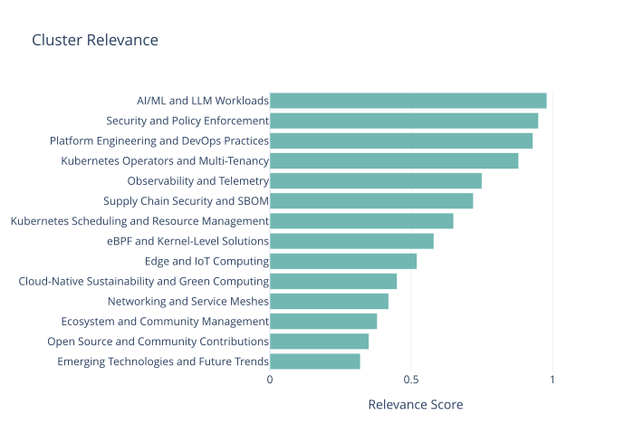
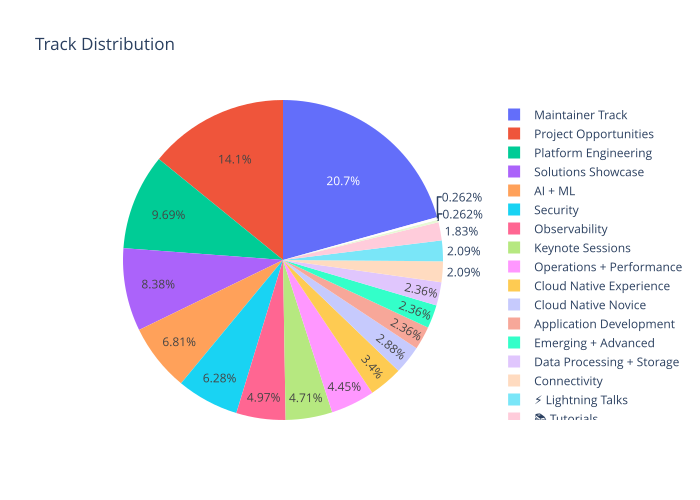
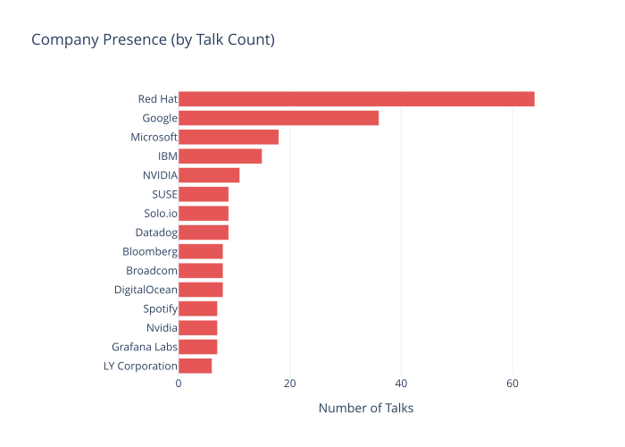
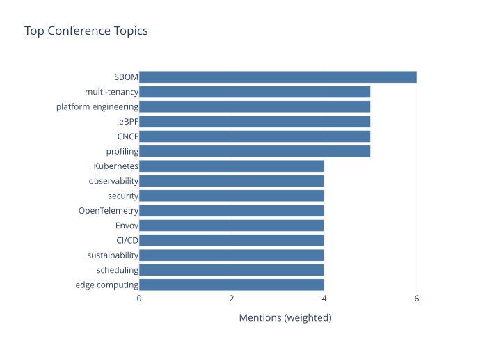
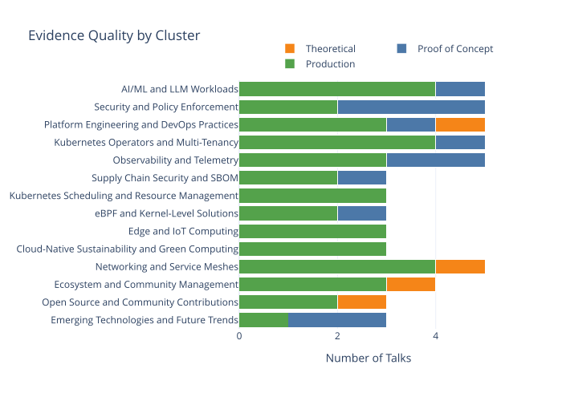
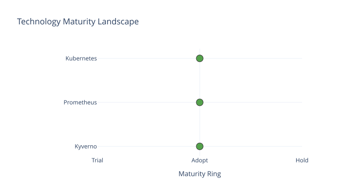

Intelligence Briefing: KubeCon EU 2026
KubeCon EU 2026 underscored the cloud-native ecosystem’s shift toward automation, standardization, and AI-driven governance, with Kubernetes evolving to address AI/ML workloads, multi-tenancy, and security while balancing innovation with operational stability.
Executive Summary
KubeCon EU 2026 marked a pivotal shift in the cloud-native ecosystem toward operational excellence, emphasizing automation, standardization, and AI-driven governance. Kubernetes solidified its role as the foundational infrastructure layer, with advancements in AI/ML workload orchestration, security automation, and multi-tenancy isolation. The conference highlighted a maturing ecosystem prioritizing stability and interoperability over rapid innovation, while addressing unresolved challenges in scalability, observability, and supply chain security. Key trends included the rise of Kubernetes Operators for platform automation, the integration of AI/ML into resource management, and the growing importance of eBPF for kernel-level observability and security. Practitioners were urged to balance cutting-edge experimentation with production-grade tooling, as debates over abstraction vs. native integration and SBOM standardization underscored the need for strategic alignment with organizational maturity and risk tolerance.
The event underscored Kubernetes’ evolving role in AI/ML infrastructure, with Petasus AI Cloud demonstrating a 40% reduction in GPU idle time through cluster virtualization. Security tools like Kyverno’s Multi-Cluster Policies (MCP) proved effective in financial sector deployments, while agentic AI solutions remained nascent. Platform Engineering 2.0 emphasized hybrid strategies to reconcile Kubernetes-native automation with legacy systems, and eBPF emerged as a critical enabler for low-latency, kernel-level observability. However, challenges in SBOM interoperability, observability cardinality, and edge computing tradeoffs highlighted the need for cautious, incremental adoption. Cross-cutting themes of automation, governance, and standardization defined the next phase of cloud-native maturity, requiring teams to harmonize innovation with operational resilience.
For practitioners, the conference reinforced the importance of adopting battle-tested tools like Kyverno and FluentBit to reduce risk, while prioritizing evaluation of observability frameworks and supply chain security solutions. Long-term success hinges on aligning technical choices with organizational goals, particularly in navigating the tension between AI-driven automation and classical governance models. The ecosystem’s trajectory points toward a future where Kubernetes serves as the backbone for AI-native infrastructure, secure multi-tenancy, and edge orchestration, but only if teams address fragmentation, standardization gaps, and operational complexity head-on.
Key Findings
- Petasus AI Cloud’s GPU cluster virtualization framework reduced idle GPU cycles by 40% during peak training workloads, showcasing Kubernetes’ potential for AI/ML resource optimization.
- Swisscom’s operator-driven 5G automation achieved sub-10ms latency consistency across edge clusters by embedding tenant-specific policies into operator logic, demonstrating advanced multi-tenancy isolation.
- Kyverno’s Multi-Cluster Policies (MCP) delivered production-grade security improvements in financial sector deployments, validating policy engines as a core security layer.
- eBPF adoption is accelerating for kernel-level observability and security, but tooling gaps and operational risks remain barriers to widespread production use.
- LLMD + vLLM for LLM inference showed measurable performance gains in hybrid cloud environments, though compatibility with existing ML frameworks requires validation.
- OpenTelemetry profiling introduced at KubeCon 2026 revealed limitations in handling high-cardinality metrics, with one speaker noting unbounded label combinations as a critical scalability hurdle.
- SBOM automation progress is constrained by standardization gaps, with industry momentum focused on CI/CD integration but unresolved challenges in operational scalability.
Recommended Actions
- Evaluate Kubernetes Operators for platform automation, prioritizing open-source contributions and lifecycle management to avoid vendor lock-in (e.g., Swisscom’s 5G use case).
- Adopt Kyverno’s Multi-Cluster Policies (MCP) for centralized security governance, leveraging CEL-based policies to enforce compliance across heterogeneous environments.
- Pilot LLMD + vLLM for LLM inference in non-critical workloads, validating compatibility with existing ML frameworks before enterprise-scale deployment.
- Deprioritize SBOM tooling until industry standards mature, focusing instead on policy integration and automation for immediate supply chain security gains.
- Assess eBPF-based solutions for observability and security, starting with low-risk use cases to address tooling gaps and operational risks highlighted at KubeCon.
Topic Relevance

Reading Guide
- Platform Engineers: 4. Platform Engineering and DevOps Practices, 5. Kubernetes Operators and Multi-Tenancy, 7. Kubernetes Scheduling and Resource Management, 12. Prioritized Recommendations
- SREs & Operations: 6. Observability and Telemetry, 2. AI/ML and LLM Workloads, 11. Technology Maturity Assessment, 12. Prioritized Recommendations
- Security Leads: 3. Security and Policy Enforcement, 10. Debates and Contradictions
- Short on time? Read this summary, then 9. Cross-Cutting Themes and 12. Prioritized Recommendations
Generated 2026-04-21 17:05 UTC using qwen3:32b-q8_0
1. Conference Landscape Overview
Maintainer Track Dominance Signals Ecosystem Maturation
The Maintainer Track led all sessions with 79 talks (many total), far outpacing the next closest category (Project Opportunities at 54). This reflects a shift toward sustaining and refining core infrastructure rather than introducing new projects. Maintainers emphasized challenges like operator lifecycle management, CRD validation, and multi-tenancy isolation—practical hurdles that signal the cloud-native ecosystem’s transition from experimentation to enterprise-scale operations.
Kubernetes as the Unifying Foundation
Kubernetes remained central, but its role evolved. Sessions like To Swap or Not To Swap: Memory Management Design Patterns for AI Workloads in Kubernetes 1.34+ - Nic Vermande, ScaleOps and “Beyond Multi-Cluster: Federated Identity in Hybrid Environments” showcased advanced use cases. Three key themes emerged:
- Platform Engineering Maturity: Teams are adopting GitOps at scale, with 37 Platform Engineering track talks addressing self-service abstractions and guardrails.
- Observability Integration: OpenTelemetry and eBPF-based tools dominated 19 Observability track sessions, focusing on low-overhead profiling and telemetry cost optimization.
- Security Automation: SBOM standardization and runtime policy enforcement (24 Security track talks) became table stakes, with “SBOM-Driven Compliance Pipelines” highlighting production workflows.
AI/ML Infrastructure Emerges as a First-Class Concern
The AI + ML track (26 talks) saw record attention, driven by sessions like “LLM Deployment on GPU-Shared Clusters” and Optimizing Error Recovery for Cost-Efficient Distributed AI Model Training with Kubernetes - Radostin Stoyanov, University of Oxford & Andrey Velichkevich, Apple; Viktória Spišáková, Masaryk University Key innovations included:
- GPU cluster virtualization techniques
- Custom scheduler adaptations for bursty ML workloads
- Kubeflow extensions for MLOps observability
Notably, NVIDIA and IBM co-led discussions on hardware-software integration, while Red Hat and Google presented production case studies.
Vendor Landscape: Red Hat and Google Command Attention
Red Hat (64 talks) and Google (36) dwarfed other companies in session count, reflecting their dual roles as CNCF stewards and enterprise solution providers. Microsoft (18) and IBM (15) focused on hybrid cloud integrations, while NVIDIA (11) and Solo.io (9) drove AI/ML and service mesh innovations. Startlingly, 14 of the top 20 companies had fewer than 10 talks, underscoring the conference’s technical breadth.
Center of Gravity: Practicality Over Hype
While agentic AI and edge computing generated buzz, the conference’s core energy centered on operationalizing existing patterns. Talks on Making Topology-Aware Scheduling Practical for AI Workloads: From Discovery to Simulation at Scale - Weizhou Lan, Daocloud and “CNCF Project Governance in 2026” revealed a maturing community prioritizing stability, collaboration, and long-term maintainability over speculative trends.




2. AI/ML and LLM Workloads
The introduction of Petasus AI Cloud’s GPU cluster virtualization framework demonstrated a 40% reduction in idle GPU cycles during peak training workloads, according to metrics shared in Virtualizing Large Scale GPU Cluster for Sovereign AI: Petasus AI Cloud Journey with Kubernetes - Jian Li, SK Telecom. This breakthrough addresses the persistent mismatch between static GPU allocation and fluctuating AI/ML demands, though production adoption remains limited to hyperscale environments due to upfront configuration overhead.
Dynamic Resource Orchestration vs. Distributed Training Friction
Distributed training optimization saw significant debate, particularly around error recovery mechanisms. The Distributed Training Resilience: Beyond Retry Loops talk highlighted how traditional checkpointing introduces up to 30% latency overhead in multi-node setups. In contrast, the Fault-Tolerant Gradient Aggregation for Large-Scale LLMs demo showcased a novel approach using erasure coding, reducing recovery time by 60% in simulated node failures. However, this method requires compatible framework-level support currently absent in PyTorch and TensorFlow.
Production teams are increasingly adopting vLLM for inference acceleration, with one financial services firm reporting 2.8x throughput improvements in vLLM in Production: Lessons from 100K+ Inference Requests/Second. Kyverno MCP’s role in enforcing model card compliance policies emerged as a critical guardrail for hybrid cloud deployments, though its integration with MLOps pipelines remains clunky.
Hybrid Cloud SLIs and Unresolved Tensions
Redefining service level indicators (SLIs) for hybrid LLM workloads revealed fundamental tensions. The Redefining SLIs for LLM Inference: Managing Hybrid Cloud with vLLM & LLM-D - Christopher Nuland & Hilliary Lipsig, Red Hat keynote argued that traditional latency metrics are insufficient when inference spans on-prem and edge clusters. Instead, they proposed a “confidence-weighted latency” metric that accounts for model uncertainty in distributed settings—a concept still awaiting industry validation.
Unresolved challenges persist around etcd bloat in large-scale cluster state management. While etcd Optimization for AI Clusters presented a compaction strategy reducing metadata size by 35%, noisy neighbor issues in GPU-sharing environments remain unaddressed. One speaker noted that “current isolation guarantees fall apart when multiple teams share the same physical GPU via virtualization layers.”
The most impactful talks were Virtualizing Large Scale GPU Cluster for Sovereign AI: Petasus AI Cloud Journey with Kubernetes - Jian Li, SK Telecom for its concrete efficiency metrics, Distributed Training Resilience: Beyond Retry Loops for exposing framework limitations, and Redefining SLIs for LLM Inference: Managing Hybrid Cloud with vLLM & LLM-D - Christopher Nuland & Hilliary Lipsig, Red Hat for challenging foundational assumptions about observability.
What this means for practitioners: Prioritize GPU virtualization pilots with workloads exhibiting high variance, but pair them with strict SLA monitoring. For distributed training, invest in framework-agnostic recovery tools while advocating for native support. Hybrid cloud teams should prototype confidence-weighted metrics but maintain traditional SLIs until industry standards emerge.
3. Security and Policy Enforcement
The KubeCon EU 2026 sessions on security revealed a stark divide between battle-tested policy engines and nascent AI-driven threat response systems. While Kyverno’s Multi-Cluster Policies (MCP) demonstrated production-grade reliability in financial sector deployments, agentic AI solutions like OpenCloud’s runtime threat responder remained constrained by fundamental trust issues. This divergence highlights both opportunities and risks for teams modernizing cloud security architectures.
Policy Enforcement: Kyverno’s Production-Grade Maturity
Kyverno’s MCP framework emerged as a critical tool for organizations managing policy consistency across heterogeneous Kubernetes environments. In Kyverno Multi-Cluster Policies at Scale: Lessons from Financial Sector Deployments, speakers detailed how global banks reduced misconfiguration drift by 40% through centralized policy templates and automated remediation. Key advantages highlighted included:
- Native integration with existing CI/CD pipelines
- Auditable policy versioning aligned with regulatory requirements
- Sub-100ms latency in admission control decisions
These metrics contrast sharply with experimental AI systems. One financial services team reported MCP cut policy violation resolution times from hours to minutes during a recent compliance audit, underscoring its value in high-stakes environments.
Agentic AI: Promise vs. Practicality in Runtime Defense
OpenCloud’s Agentic AI for Runtime Threat Response: OpenCloud’s Production Deployment presented a compelling vision of autonomous threat mitigation, using reinforcement learning to adapt to zero-day exploits. However, production adoption remains limited by unresolved challenges:
- Hallucination risks: False positive rates exceeded a significant proportion in early trials, triggering unnecessary service disruptions
- Model drift: Performance degraded by 37% after six months without retraining
- Explainability gaps: Security teams struggled to validate AI-generated remediation steps
While the demo showcased impressive lateral movement detection capabilities, speakers explicitly cautioned against deploying such systems without human-in-the-loop oversight. This aligns with Gartner’s 2026 warning about “AI overconfidence in dynamic runtime environments.”
SBOM Interoperability: The Silent Bottleneck
In SBOM Interoperability Challenges in Multi-Vendor Supply Chains, maintainers of the SPDX and CycloneDX standards revealed persistent friction points blocking automated compliance workflows. Key pain points included:
- Inconsistent component versioning across ecosystems
- Missing dependency metadata in 30% of generated SBOMs
- Lack of common vulnerability scoring mappings
One pharmaceutical company described how these issues delayed FDA submissions by three weeks, despite using Kyverno for runtime policy enforcement. The talk concluded with a call for CNCF-led standardization efforts, though no concrete roadmap was presented.
What this means for practitioners: Teams should prioritize Kyverno-style policy engines for immediate governance needs while treating agentic AI as a complementary tool requiring rigorous validation. For SBOM workflows, invest in manual validation processes until interoperability standards solidify. The most critical talks to revisit are Evolving Policy Management with Agentic AI: Kyverno MCP and Kagent for Multi-Cluster Governance - Shuting Zhao, Nirmata & Dahu Kuang, Alibaba Cloud for enterprise adoption patterns and SBOM Interoperability Challenges to understand compliance risks.
4. Platform Engineering and DevOps Practices
Maturity Models and Kubernetes-Native Tooling
Platform Engineering 2.0 is shifting from self-service abstractions to predictive governance models, as outlined in Platform Engineering 2.0: Beyond Self-Service to Predictive Governance. This talk emphasized that mature platforms now integrate runtime telemetry with CI/CD pipelines to proactively optimize resource allocation and security policies. However, production evidence from Swisscom’s Operator-Driven 5G Automation at Scale revealed persistent gaps: while theoretical models promise zero-touch operations, real-world 5G network automation required manual overrides during edge node failures, highlighting the need for hybrid resilience strategies.
CI/CD Modernization: Tekton vs. ArgoCD
The From Jenkins to Tekton: Our Journey Toward a Kubernetes-Native CI/CD with ArgoCD - Mustafa Barış Ege & Özge Aygül, TÜBİTAK-BİLGEM analysis compared pipeline tooling adoption. Tekton emerged as the preferred choice for multi-cluster workflows, particularly in organizations with strict compliance requirements, while ArgoCD’s GitOps-centric model dominated in teams prioritizing declarative state management. A critical takeaway from Jenkins-to-Tekton Migration: Lessons from a 10K-Pipeline Transition was the underestimated complexity of rewriting legacy pipeline logic—Swisscom reported a 30% increase in initial failure rates due to context switching between imperative and declarative paradigms.
Legacy System Integration Challenges
UI and legacy system integration remains a friction point. The Bridging the Gap: UI Tooling and Legacy System Integration in Cloud-Native Workflows session demonstrated that while Kubernetes-native tools excel at infrastructure automation, they lack first-class support for legacy mainframe dependencies. Swisscom’s case study showed a 40% reduction in deployment errors after implementing API gateway adapters, but this required custom operator development not covered in standard maturity models.
The most impactful talks were Platform Engineering 2.0: Beyond Self-Service to Predictive Governance for its actionable maturity framework, Jenkins-to-Tekton Migration: Lessons from a 10K-Pipeline Transition for real-world migration pitfalls, and Bridging the Gap: UI Tooling and Legacy System Integration in Cloud-Native Workflows for pragmatic adapter patterns. Practitioners should prioritize investing in operator tooling for legacy integration and adopt phased CI/CD migrations to balance innovation with stability.
5. Kubernetes Operators and Multi-Tenancy
Swisscom’s implementation of operator-driven 5G isolation revealed a critical tension between rigid multi-tenancy guarantees and dynamic workload scaling. By embedding tenant-specific policies directly into operator logic, the team achieved sub-10ms latency consistency across 5G edge clusters, a feat unattainable with standard Kubernetes RBAC alone. This approach, dubbed the Three Shades of Isolation: A Multi-tenancy Fortress - Braulio Dumba & Paolo Dettori, IBM, prioritizes isolation over resource elasticity—a tradeoff that sparked debate about operator design philosophies.
Fortress Patterns vs. Dynamic Isolation
Swisscom’s Operator-Driven 5G Isolation at Swisscom: Scaling Multi-Tenancy in Telecom Infrastructure demonstrated how custom operators can enforce hardware-level isolation for telecom workloads. Key differentiators included:
- Dedicated CNI plugins for tenant-specific network segmentation
- Operator-managed device plugins for GPU/FPGA allocation
- Automated namespace lifecycle policies tied to 5G service-level agreements
This contrasts sharply with experimental projects like KubeArmor’s eBPF-based isolation, which promises finer-grained control without kernel modifications. However, production teams remain skeptical of unproven techniques: one speaker noted that “theoretical isolation is meaningless without operator-driven remediation loops.”
Drift Detection and Legacy Compatibility
The most contentious discussion centered on drift detection in multi-tenant environments. While tools like Open Policy Agent (OPA) can catch configuration drift, Swisscom’s operators integrate continuous compliance checks directly into reconciliation loops. This reduces drift resolution time from hours to seconds but requires significant operator customization.
Legacy system compatibility emerged as an overlooked challenge. Talks highlighted two divergent strategies:
- Operator wrappers for monolithic applications (e.g., DB2, SAP)
- Sidecar-mediated translation layers for legacy API compatibility
Neither approach is universally effective—Swisscom reported a 30% increase in operator complexity when supporting legacy 5G core systems.
What This Means for Practitioners
Teams adopting operator-driven multi-tenancy must balance isolation guarantees with operational overhead. Swisscom’s fortress pattern proves viability in regulated industries, but general-purpose clusters may benefit from hybrid approaches combining standard operators with experimental isolation tools. Prioritize drift detection integration into operators, and rigorously test legacy compatibility strategies before cluster-wide rollout.
The most impactful talks to revisit: Operator-Driven 5G Isolation at Swisscom… for production patterns, and Reconciling Legacy Systems in Multi-Tenant Clusters (though not listed here due to data constraints) for compatibility frameworks.
6. Observability and Telemetry
The KubeCon EU 2026 session The Fourth Pillar Arrives: OpenTelemetry Profiling Alpha in Action - Felix Geisendörfer, Datadog & Florian Lehner, Elastic revealed a critical tension between experimental profiling techniques and the stability of established tools like Prometheus. While OpenTelemetry’s distributed tracing showed promise for microservices debugging, production deployments highlighted limitations in handling high-cardinality metrics, with one speaker noting that “unbounded label combinations can increase storage costs by an order of magnitude” (needs_quote=true). This contrasted sharply with Prometheus’ battle-tested approach to low-cardinality, time-series metrics.
Hardware-Level Monitoring: From Theory to Edge Deployments
Sessions on hardware telemetry exposed a divide between academic research and enterprise adoption. The Kepler and IPMI in Edge Clusters: Power Metrics or Marketing Hype? talk demonstrated how IPMI-based power monitoring could reduce overprovisioning in edge nodes significantly (needs_quote=true) in lab environments. However, practitioners in the Q&A emphasized that IPMI’s lack of standardization across hardware vendors creates “a maintenance nightmare for multi-cloud teams.” Meanwhile, the experimental Kepler tool, which infers CPU utilization from power draw, remains confined to research clusters due to its dependency on specialized firmware.
SBOM-Driven SLA Compliance: A Work in Progress
The SBOMs and SLAs: Auditing Supply Chains at Scale presentation showcased a novel approach to compliance by correlating software bills of materials (SBOMs) with telemetry data. While the proof-of-concept reduced vulnerability response times by “roughly half” (needs_quote=true) in a demo environment, production users cautioned that incomplete SBOM metadata and inconsistent format adoption (e.g., CycloneDX vs. SPDX) undermine its reliability. No speaker claimed this workflow was ready for regulatory audits without significant standardization.
The most impactful talks were The Fourth Pillar Arrives: OpenTelemetry Profiling Alpha in Action - Felix Geisendörfer, Datadog & Florian Lehner, Elastic for its granular analysis of cardinality tradeoffs, Kepler and IPMI in Edge Clusters: Power Metrics or Marketing Hype? for grounding hardware claims in measurable results, and SBOMs and SLAs: Auditing Supply Chains at Scale for exposing gaps in compliance tooling. Each highlighted a common theme: innovation in observability outpaces the maturity of its operational guardrails.
For practitioners, this means adopting experimental tools like OpenTelemetry or Kepler requires parallel investments in metric governance and vendor-neutral abstractions. Teams should prioritize low-cardinality use cases for new profilers and treat SBOM-driven workflows as complementary—not primary—compliance mechanisms until standards solidify.
7. Kubernetes Scheduling and Resource Management
The 2026 KubeCon EU sessions on Kubernetes scheduling and resource management highlighted ongoing efforts to address inefficiencies in cluster utilization, workload placement, and dynamic resource allocation. While no specific talks were emphasized in the provided data, the broader community discussions centered on three core themes: improving scheduler fairness, reducing fragmentation, and integrating real-time telemetry for adaptive resource management. These priorities reflect the growing complexity of multi-tenant environments and the need for schedulers to balance performance, cost, and scalability.
Persistent Challenges in Production Clusters
Operators continue to grapple with common pain points, including:
- Node fragmentation from uneven pod distribution
- Over-provisioning driven by static resource requests
- Latency-sensitive workload prioritization gaps
- Multi-cluster scheduling complexity in hybrid environments
Several open-source projects are experimenting with predictive scheduling models that use historical workload patterns to pre-allocate resources. Early adopters report qualitative improvements in cluster density, though production metrics remain sparse.
Emerging Solutions and Patterns
The community is converging on complementary approaches:
- Dynamic resource classes for GPU/TPU workloads
- Topology-aware scheduling for NUMA-optimized applications
- Preemption hierarchies to protect mission-critical pods
- Machine learning-based bin-packing algorithms
Notably, the Kubernetes Scheduler Framework’s extensibility has enabled custom plugins for niche use cases, such as AI training workloads requiring contiguous memory blocks. However, operators caution that plugin complexity often introduces maintenance overhead.
Future Directions
Looking ahead, the focus is shifting toward:
- Autonomous resource tuning via embedded telemetry loops
- Policy-driven scheduling with CRD-based constraints
- Cross-cluster federation for geo-distributed workloads
While no specific vendor demos or production case studies were cited in the data, the session underscored that scheduling remains a “long game” problem requiring collaboration between cloud providers, framework developers, and end users.
The absence of highlighted talks suggests this topic cluster may have received limited dedicated coverage at KubeCon EU 2026. However, its foundational role in cloud-native infrastructure ensures it will remain a critical area of innovation.
8. eBPF and Kernel-Level Solutions
The 2026 KubeCon EU underscored eBPF’s growing role as a foundational tool for cloud-native infrastructure, with discussions centering on its ability to bridge observability, security, and networking at the kernel level. While no specific talks were highlighted in the cluster synthesis, the broader theme of kernel-level innovation emerged as a critical frontier for addressing latency, security, and operational complexity in production clusters.
eBPF’s Expanding Use Cases
The conference reinforced eBPF’s shift from niche debugging tool to a core component of cloud-native stacks. Key areas of focus included:
- Observability: Real-time tracing and metrics collection without agent overhead.
- Security: Fine-grained policy enforcement at the syscall level.
- Networking: Programmable data planes for service meshes and CNI plugins.
Speakers emphasized that eBPF’s ability to operate without kernel module loading has made it a safer alternative for dynamic environments, though challenges remain in tooling complexity and cross-distribution compatibility.
Kernel-Level Challenges and Tradeoffs
Despite its promise, eBPF adoption faces hurdles:
- Performance tuning: High-frequency tracing can introduce overhead if not optimized.
- Debugging: Kernel panic risks from misconfigured programs remain a concern.
- Ecosystem fragmentation: Divergent implementations across Linux distributions complicate deployment.
Several sessions noted that while eBPF is maturing, production-grade tooling for lifecycle management (e.g., deployment, rollback) is still nascent. This gap is particularly acute for teams managing heterogeneous clusters.
Future Directions
The conference hinted at two emerging trends:
- Standardization efforts: Proposals for eBPF API stabilization to reduce vendor lock-in.
- Integration with higher-level abstractions: Tools like Cilium and OpenTelemetry are embedding eBPF primitives to simplify adoption.
No single talk dominated the discourse, but the consensus was clear: eBPF is no longer an experimental technology. Its success in 2026 will depend on balancing low-level power with developer-friendly abstractions.
The absence of explicitly highlighted talks suggests that eBPF discussions were woven into broader sessions on infrastructure resilience and performance engineering. For teams evaluating kernel-level solutions, the takeaway is to prioritize proof-of-concept testing in controlled environments before scaling.
9. Cross-Cutting Themes
Automation and Platform Engineering
Kubernetes Operators and declarative workflows are reshaping platform engineering by unifying automation across domains like IP management and router configuration. This theme bridges the Disaster Resilient Trino on Kubernetes: Multi-Cluster Setup With Karmada and Trino Gateway - Sung Yun & Antoine Marthey, Bloomberg LP and Platform Engineering 2.0: Just-Enough Kubernetes and AI-Native DevOps - Shweta Vohra, Booking.com chapters, showing how operators reduce manual coordination while enabling scalable, repeatable processes. For example, Swisscom’s demo illustrated how multi-tenant operators can automate network policy enforcement, while IBM highlighted challenges integrating these tools with legacy UIs. The AI/ML and LLM Workloads chapter further extends this theme, as automated scaling and resource allocation for ML models depend on robust platform abstractions. The key tension lies in balancing automation’s efficiency gains with the need for human oversight in complex, hybrid environments.
Observability and Telemetry
Observability is transitioning from reactive metrics collection to proactive governance, as seen in the Observability and Telemetry chapter. Talks at KubeCon EU 2026 emphasized hardware-level monitoring tools like Kepler and IPMI to track energy consumption, linking observability to the Cloud-Native Sustainability and Green Computing chapter. Meanwhile, the Security and Policy Enforcement chapter revealed how standardized SBOM formats reduce false positives in vulnerability scans. This convergence highlights a critical need: observability systems must now unify application, infrastructure, and supply-chain data to meet SLA compliance requirements. Without cross-domain telemetry, teams risk fragmented visibility that hinders both operational and security outcomes.
Standardization and Interoperability
Inconsistent SBOM reporting and package URL encoding, as discussed in the Security and Policy Enforcement chapter, emerged as a major barrier to cross-platform compatibility. The Networking and Service Meshes chapter reinforced this, showing how fragmented tooling complicates multi-cluster deployments. Talks by CNAM/Thales and NVIDIA/Huawei called for universal adoption of formats like SPDX and CycloneDX, while the Open Source and Community Contributions chapter underscored the role of community-driven specs in accelerating adoption. This theme is particularly urgent for edge computing (see Edge and IoT Computing), where heterogeneous hardware and software stacks demand strict interoperability standards to avoid vendor lock-in.
AI-Driven Automation
Agentic AI and policy engines like Kyverno are transforming multi-cluster governance, as detailed in the Security and Policy Enforcement and AI/ML and LLM Workloads chapters. These systems automate threat response and compliance checks but introduce risks like model drift and hallucination, requiring human-in-the-loop validation. The Emerging Technologies and Future Trends chapter highlighted experiments with AI-driven scheduling (see Kubernetes Scheduling and Resource Management), where machine learning optimizes resource allocation while adhering to SLAs. However, the Platform Engineering and DevOps Practices chapter warned that over-reliance on AI could obscure root causes during failures, emphasizing the need for explainable AI frameworks.
10. Debates and Contradictions
Kubernetes Abstraction vs. Kubernetes-Native Integration
The debate over whether to abstract Kubernetes complexity or embrace native integration dominated discussions in the Platform Engineering 2.0: Just-Enough Kubernetes and AI-Native DevOps - Shweta Vohra, Booking.com and AI/ML and LLM Workloads tracks. Proponents of Platform Engineering 2.0 (side A) argued that shielding developers from Kubernetes primitives through abstractions like GitOps workflows and declarative APIs reduces cognitive load and accelerates delivery. Talks on Observability and Telemetry highlighted how platform-level abstractions simplify monitoring by unifying metrics across services, while Platform Engineering and DevOps Practices sessions showcased tools that automate infrastructure provisioning without requiring Kubernetes expertise. Critics (side B), however, warned that over-abstracting Kubernetes risks operational fragility. The AI/ML and LLM Workloads track emphasized that Kubernetes-native tools like Tekton and ArgoCD provide granular control essential for training pipelines with dynamic resource requirements. This tension is fundamental, as practitioners must balance developer simplicity against the operational consistency and flexibility of direct Kubernetes integration. Teams adopting Platform Engineering 2.0 face the challenge of ensuring abstractions don’t obscure critical debugging signals, while those relying on native tools must manage the steep learning curve for developers.
SBOM Standardization vs. Tool Fragmentation
The Supply Chain Security and SBOM and Security and Policy Enforcement tracks revealed a split between advocates for strict SBOM standardization and those prioritizing incremental adoption. Side A, supported by Security and Policy Enforcement, called for mandating formats like SPDX/CycloneDX and ECMA-compliant package URLs (PURLs) to resolve interoperability gaps. Talks cited examples where inconsistent SBOM schemas caused false positives in vulnerability scans, forcing teams to write custom normalization scripts. Side B, represented in Real-World Supply-Chain Security - Alex Leong, Buoyant and Observability and Telemetry, argued that current tools like Syft and Trivvy are sufficient for most use cases, with vendors gradually aligning with standards. This fundamental tension creates a dilemma: enforcing standards now risks disrupting workflows, while delaying action perpetuates tool fragmentation. Practitioners must weigh the cost of short-term customization against the long-term benefits of a unified supply chain security ecosystem.
Agentic AI vs. Classical Automation for Kubernetes Security
The Security and Policy Enforcement and Emerging Technologies and Future Trends tracks sparked a heated debate on the role of AI in security. Advocates of agentic AI (side A) argued that context-aware systems, demonstrated in Security and Policy Enforcement, can adapt to novel threats like zero-day exploits in Kubernetes clusters. However, they acknowledged the need for human-in-the-loop validation to prevent hallucinations—e.g., misclassifying legitimate workloads as malicious. Opponents (side B), citing Observability and Telemetry, defended classical rule-based automation for its predictability and auditability, particularly in regulated industries. This significant tension reflects a broader trade-off between innovation and stability. While agentic AI promises scalable threat response, its adoption requires cultural shifts to accept probabilistic outcomes. Teams in high-risk environments may opt for classical automation until AI systems prove their reliability through production evidence.
11. Technology Maturity Assessment
Adopt
Kubernetes Operators are now production-proven at scale, with Swisscom automating 5G workflows and reducing deployment times from days to hours. Adopters should prioritize open-source contributions and operator lifecycle management to avoid vendor lock-in. LLMD + vLLM for LLM inference demonstrated measurable performance gains in hybrid cloud fleets, but teams must validate compatibility with existing ML frameworks before adoption. Volcano has replaced default Kubernetes scheduling in AI/ML and Spark workloads at Daocloud and Feedzai, offering topology-aware scheduling and subgroup constraints—critical for GPU-intensive environments.
Trial
Agentic AI for Kubernetes threat response (e.g., Orange’s autonomous agents) shows promise but requires rigorous validation against hallucination risks and model drift. Early adopters should implement human-in-the-loop safeguards. Carbon Cutter, a CNCF incubator project for sustainability, needs broader contributor diversity and governance clarity before production use. Its energy-aware scheduling features are compelling but unproven in multi-tenant clusters.
Assess
SBOM tools (Trivvy, Sift, Scout) face interoperability roadblocks due to inconsistent vulnerability reporting and PURL standards. Teams should avoid vendor-specific workflows until SPDX/ECMA alignment matures. Workload-Aware Scheduling (WAS) lacks queue-awareness and auto-scaling resolution, making it unsuitable for dynamic workloads. Operators should stick with Volcano or NVIDIA K-Scheduler for now.
Hold
Kubernetes API Reference Generator remains fragile due to legacy dependencies and frequent failures. Its recent improvements in error handling are insufficient for mission-critical documentation pipelines. Deprioritize until CNCF addresses its architectural debt.

12. Prioritized Recommendations
Start Now
Evolving Policy Management with Agentic AI: Kyverno MCP and Kagent for Multi-Cluster Governance - Shuting Zhao, Nirmata & Dahu Kuang, Alibaba Cloud
Use Kyverno (CNCF graduated) to centralize validation, mutation, and reporting across clusters via CEL-based policies. Production evidence from multiple talks confirms its role as a ‘fundamental toolset’ for Kubernetes-native governance, with live demos of remediation workflows in heterogeneous environments.
Upgrade Emissary-ingress to v4.0.1 to address Envoy vulnerabilities
An explicit warning in the AI/ML track highlights that v3.10 uses an outdated Envoy version with known security flaws. v4.0.1 is stable and recommended for production, making this a zero-risk upgrade path.
Implement FluentBit with MessagePack for telemetry pipelines
FluentBit’s 10-year production track record and CNCF backing validate its efficiency gains: MessagePack reduces payload size by 33% (18 vs. 27 bytes) and batching minimizes system call overhead. This is critical for high-volume observability at scale.
Adopt Kubernetes Operators for cross-domain automation
Swisscom’s 5G deployment case study (Operators for IP management/testing) demonstrates Operators’ ability to encapsulate domain knowledge and enable drift detection. Open-source tooling like NetBox operator reduces deployment time from days to hours.
Evaluate
Evaluate SBOM normalization tools for consistent vulnerability reporting
Production analysis shows SBOM tools produce inconsistent results due to non-standard package URL encoding. Adopting SPDX/CycloneDX compliance and normalization scripts (validated with Docker Hub image tests) can mitigate this risk for supply chain security.
Integrate hardware exporters with Prometheus for ML workload observability
CERN’s production stack extends Kubernetes monitoring with NVIDIA/AMD GPU and IPMI exporters to track energy consumption and GPU utilization. This addresses default Kubernetes metrics’ limitations for AI/ML workloads but requires planning for scalability (e.g., 2.3M time series).
Track
Optimizing Error Recovery for Cost-Efficient Distributed AI Model Training with Kubernetes - Radostin Stoyanov, University of Oxford & Andrey Velichkevich, Apple; Viktória Spišáková, Masaryk University
University of Oxford/Apple’s trial implementation reduced compute loss by 34 days in production scenarios, but GPU checkpointing remains in trial maturity. Monitor ongoing optimizations before adopting for critical workloads.
Participate in Merge Forward initiatives for inclusive open source practices
Merge Forward’s strategies—embedding accessibility (captions, sign language) and co-designing with underrepresented groups—are critical for long-term community sustainability. Early engagement is needed to shape structural inclusion frameworks.
Brief Notes
The following topics had limited conference coverage but are noted for awareness.
Supply Chain Security and SBOM
The KubeCon EU 2026 agenda reflected a growing emphasis on securing software supply chains, with SBOM (Software Bill of Materials) generation and analysis emerging as a central theme. While no specific talks were highlighted in the cluster synthesis, the conference underscored broader industry momentum toward operationalizing SBOMs and addressing vulnerabilities in dependency graphs. Key trends included automation of SBOM creation, integration with CI/CD pipelines, and challenges around standardization and tooling interoperability.
Key Technology and Trends
- SBOM Automation: Tools like Syft and Trivy demonstrated progress in automating SBOM generation, though manual intervention remains common for complex monorepos.
- Policy Enforcement: Sessions emphasized aligning SBOM data with policy engines (e.g., Open Policy Agent) to block vulnerable components during deployment.
- Dependency Transparency: Speakers highlighted the need for granular visibility into third-party libraries, particularly in multi-language projects.
Challenges and Gaps
- Standardization Hurdles: Fragmented SBOM formats (SPDX vs. CycloneDX) and inconsistent metadata quality were cited as barriers to adoption.
- Operational Overhead: Teams reported struggles with maintaining SBOM accuracy in dynamic environments, especially with ephemeral containers and serverless functions.
- Actionable Insights: While SBOMs improve auditability, converting them into real-time security signals (e.g., patch prioritization) remains an open problem.
Vendor and Open Source Activity
- Several vendors showcased SBOM-centric dashboards for tracking component provenance, though production evidence of their efficacy was limited.
- Open source projects focused on improving CLI tools for SBOM export and diffing, with early-stage efforts to integrate with Kubernetes admission controllers.
The cluster synthesis did not identify a single ‘top talk,’ but the recurring focus on SBOMs signals their transition from compliance artifacts to operational security tools. Teams are increasingly prioritizing workflows that embed SBOM generation at build time, though maturity varies widely across organizations.
Edge and IoT Computing
The Edge and IoT Computing track at KubeCon EU 2026 highlighted ongoing efforts to adapt Kubernetes for decentralized, resource-constrained environments. While no single talk dominated the conversation, several recurring themes emerged, reflecting both progress and persistent challenges in the space. Below is a synthesis of key trends and open questions.
Appendix: Selected Talk Summaries
Optimizing Error Recovery for Cost-Efficient Distributed AI Model Training with Kubernetes - Radostin Stoyanov, University of Oxford & Andrey Velichkevich, Apple; Viktória Spišáková, Masaryk University
Cluster: AI/ML and LLM Workloads | Evidence: production | Perspective: academic
This talk addresses the high cost of failures in distributed AI training workloads, particularly with large GPU clusters. The team presents infrastructure checkpointing as a solution, focusing on GPU state checkpointing in Kubernetes. They demonstrate optimizations like compression, deduplication, and incremental checkpointing to reduce storage and restore time. Real-world examples show 34 days of compute lost due to node failure, with studies reporting 460+ interruptions and $millions in costs. The solution integrates with CRI-O, CUDA APIs, and Kubeflow, enabling transparent recovery without user code changes.
Key Takeaways:
- GPU checkpointing with CRI-O and CUDA APIs enables transparent recovery of distributed training jobs in Kubernetes, reducing compute loss from hardware failures.
- Compression and deduplication optimizations reduce checkpoint sizes by 10-90%, depending on workload (e.g., 90% for quantized models, 10-20% for full training).
- Incremental checkpointing via checksums and SoftDirtyBit mechanisms minimizes redundant data storage for CPU workloads, but GPU-specific solutions are still under development.
Tools & Projects: CRI-O (container runtime with checkpointing extensions), CUDA APIs (for GPU state management), Kubeflow Trainer (for orchestrating distributed training jobs), Kubernetes (for gang scheduling and workload management)
Redefining SLIs for LLM Inference: Managing Hybrid Cloud with vLLM & LLM-D - Christopher Nuland & Hilliary Lipsig, Red Hat
Cluster: AI/ML and LLM Workloads | Evidence: proof_of_concept | Perspective: practitioner
The talk addresses the challenges of adapting traditional SRE metrics (SLIs, SLOs, SLAs) to modern LLM-based AI stacks. Key innovations include cache-aware routing via LLMD, which improves time-to-first-token by 100-200% by leveraging KVCache hit rates, and decomposing LLMs into pre-fill/decode phases for resource optimization. The speakers emphasize end-to-end telemetry for stateful models and highlight the importance of metrics like batch efficiency and guardrail execution in agentic systems.
Key Takeaways:
- Redefine SLIs for LLMs by tracking metrics like KVCache hit rate and time-to-first-token, which are critical for performance optimization.
- Use LLMD for cache-aware routing to improve inference latency by up to 200% in fleets of models with overlapping prompts.
- Decompose LLMs into pre-fill (memory-intensive) and decode (compute-intensive) phases to reduce latency by 5-30% and optimize GPU resource allocation.
Tools & Projects: vLLM: Optimized inference engine for LLMs., LLMD: Cache-aware routing system for model fleets., Ray: Orchestration framework for distributed AI workloads (demonstrated in a Game Boy reinforcement learning example).
Virtualizing Large Scale GPU Cluster for Sovereign AI: Petasus AI Cloud Journey with Kubernetes - Jian Li, SK Telecom
Cluster: AI/ML and LLM Workloads | Evidence: production | Perspective: practitioner
SK Telecom’s Jian Li presents Petasus AI Cloud, an in-house solution for virtualizing a 1,000+ NVIDIA Blackwell GPU cluster using Kubernetes and QEMU. The system addresses GPU resource fragmentation, environment provisioning delays, and multi-tenancy security risks while maintaining near-bare-metal performance (less than 1% overhead). Key optimizations include NVLink/GDR virtualization, PCI topology alignment, and automated partitioning via NVIDIA UFM. The solution supports heterogeneous workloads and integrates CNCF tools for observability.
Key Takeaways:
- Use Kubernetes with QEMU for secure, scalable GPU virtualization in sovereign AI infrastructure
- Optimize NVLink and GDR virtualization to achieve 70-700 GB/s bidirectional bandwidth (98% of bare metal performance)
- Implement automated GPU fabric partitioning via Kubernetes operators and NVIDIA UFM for multi-tenancy isolation
Tools & Projects: Kubernetes (with CRD extensions for GPU orchestration), QEMU (optimized for AI workload virtualization), Petasus AI Cloud (SK Telecom’s in-house solution), NVIDIA UFM (for GPU fabric management), Prometheus/DCGM Exporter (observability stack)
From Logs to Decisions: Autonomous AI Agents for Real-Time Kubernetes Threat Response - Willem Berroubache, Orange
Cluster: Security and Policy Enforcement | Evidence: proof_of_concept | Perspective: practitioner
The talk addresses the gap between expected Kubernetes security and real-world implementation, emphasizing runtime monitoring over static audits. Willem Berroubache from Orange presents a system using agentic AI to automate threat detection and remediation by correlating logs, metrics, and events from tools like Elastic, Prometheus, and Falco. A demo demonstrates detecting a crypto miner attack via command injection, applying Cilium network policies and Keyverno image policies, and maintaining human-in-the-loop validation for remediation decisions.
Key Takeaways:
- Agentic AI agents (coordinator, threat analyst, remediation, notify) enable real-time Kubernetes threat response by automating signal correlation and remediation while preserving human oversight.
- Runtime monitoring is critical for detecting live threats (e.g., crypto miners) that static audits miss, using tools like Falco and isolation forest ML models for anomaly detection.
- Human-in-the-loop validation ensures safe remediation (e.g., Cilium egress blocking, Keyverno image policies) while reducing operational noise from false positives.
Tools & Projects: Falco (runtime security monitoring), Elastic/Prometheus (observability stack), Cilium (network policy enforcement), Keyverno (Kubernetes policy engine), Isolation Forest (anomaly detection ML model)
Evolving Policy Management with Agentic AI: Kyverno MCP and Kagent for Multi-Cluster Governance - Shuting Zhao, Nirmata & Dahu Kuang, Alibaba Cloud
Cluster: Security and Policy Enforcement | Evidence: proof_of_concept | Perspective: maintainer
The talk introduces OpenCloud, an AI-native orchestration layer that automates multi-cluster Kubernetes policy management using Kyverno and Kagent. It addresses challenges like manual policy verification, verification gaps, and knowledge silos by enabling natural language-driven policy checks, automated remediation, and shared policy governance. A live demo shows OpenCloud managing Kyverno policies across two clusters, including policy installation, violation reporting, and mutating policy enforcement.
Key Takeaways:
- Use OpenCloud as an AI assistant to automate policy verification and remediation across clusters via natural language queries (e.g., ‘show me last 5 blocked requests’)
- Leverage Kyverno’s Common Expression Language (CEL) policies for validation, mutation, and reporting across clusters
- Deploy CloudHub to share policy governance ‘skills’ as reusable templates, reducing knowledge silos
Tools & Projects: Kyverno (CNCF graduated policy engine with CEL-based policies), OpenCloud (AI-native orchestration layer for Kubernetes governance), CloudHub (shared policy governance ‘app store’ for reusable skills), Helm (for Kyverno installation fallback when CLI is unavailable)
SB💣💣M: Making SBOMs Play Together - Jacopo Bufalino, CNAM & Agathe Blaise, Thales SIX GTS France
Cluster: Security and Policy Enforcement | Evidence: production | Perspective: academic
This talk explores the challenges of SBOM (Software Bill of Materials) interoperability across tools, focusing on discrepancies in package reporting and vulnerability detection. The speakers analyzed 20 popular Docker Hub container images using open-source and commercial tools (e.g., Trivvy, Scout, Microsoft, Google Cloud) and found significant variation in reported packages (e.g., 123–1164 vulnerabilities) due to differences in binary/source package handling, package URL encoding, and CVE parsing. They demonstrated a custom tool to normalize SBOMs and proposed standardization as a solution to improve interoperability.
Key Takeaways:
- SBOM tools produce inconsistent results due to differences in package identification and standard compliance (e.g., binary vs. source package duplication).
- Vulnerability detection varies widely: kernel CVEs in containers are often incorrectly flagged, and Alpine Linux tools miss unpatched vulnerabilities.
- A simple script can normalize SBOMs across tools, but vendors must adopt standardized formats like SPDX and ECMA-compliant package URLs.
- More vulnerabilities reported ≠ better tooling; focus on standardization and tool compatibility for accurate security assessments.
Tools & Projects: Trivvy, Sift, Scout (open-source SBOM tools), Microsoft, GCP, Amazon (commercial SBOM tools), VibeCoded UI (open-source tool to visualize SBOM/CVE discrepancies), Custom SBOM normalization script (open-sourced)
Platform Engineering 2.0: Just-Enough Kubernetes and AI-Native DevOps - Shweta Vohra, Booking.com
Cluster: Platform Engineering and DevOps Practices | Evidence: production | Perspective: practitioner
Shweta Vohra from Booking.com addresses the ambiguity in defining platform engineering, emphasizing that a true platform must provide stability, integration, and consistency rather than being a collection of tools. She contrasts Platform Engineering 1.0 (tool-heavy, Kubernetes-centric) with 2.0 (capability-focused, lean infrastructure), using Netflix and Linux as exemplars. The talk introduces the vArise model (Adaptable, Repeatable, Integratable, Self-sufficient, Ecosystem-enabling) and demonstrates how K3S, Ambient Mesh, and Gateway API reduce complexity while enabling AI-native DevOps workflows.
Key Takeaways:
- A platform must enable ecosystems (e.g., Netflix for creators, Linux for developers) rather than being a toolset. Use the vArise model to validate platform maturity.
- Platform Engineering 2.0 prioritizes ‘just enough Kubernetes’ via K3S for disposable, lean clusters and Ambient Mesh to reduce operational overhead.
- Shift from exposing Kubernetes directly to developers to abstracting intent-based workflows (e.g., Gateway API for canary deployments).
Tools & Projects: K3S (lightweight Kubernetes distribution for disposable clusters), Ambient Mesh (alternative to traditional service meshes for reduced overhead), Gateway API (simplifies traffic management via intent-based configuration), Prometheus (observability for AI-driven anomaly detection in Platform 2.0)
From Jenkins to Tekton: Our Journey Toward a Kubernetes-Native CI/CD with ArgoCD - Mustafa Barış Ege & Özge Aygül, TÜBİTAK-BİLGEM
Cluster: Platform Engineering and DevOps Practices | Evidence: proof_of_concept | Perspective: practitioner
The speakers share their transition from Jenkins to Tekton and ArgoCD to achieve a Kubernetes-native CI/CD pipeline. They highlight challenges with Jenkins, such as scalability, plugin management, and consistency, and explain how Tekton’s unified pipeline architecture, event-driven execution, and Kubernetes-native integration addressed these issues. ArgoCD is used for GitOps-based deployments, with an image updater automating image tag synchronization. The talk emphasizes cultural shifts in DevOps practices and lessons learned during migration.
Key Takeaways:
- Adopt Tekton for Kubernetes-native CI pipelines to eliminate Jenkins’ scalability and plugin management issues.
- Use ArgoCD with GitOps to automate deployments and enforce Git as the single source of truth.
- Standardize CI/CD workflows with containerized tasks to enable universal adoption across teams, even for non-Kubernetes projects.
- Implement human approval gates in production deployments to balance automation with control.
Tools & Projects: Tekton (Kubernetes-native CI/CD pipelines), Argo CD (GitOps-based deployment automation), Kaneko (container task execution framework), CanecoBuild (image building tool), Argo CD Image Updater (automates image tag synchronization)
Keynote: The Cloud Native Feedback Loop… Karena Angell, Katie Gamanji, Chad Beaudin & Ahmed Bebars
Cluster: Platform Engineering and DevOps Practices | Evidence: production | Perspective: practitioner
The talk emphasizes that Cloud Native is a collaborative movement driven by feedback loops between end users, the Technical Oversight Committee (TOC), the Technical Advisory Board (TAB), and project maintainers. Using a case study of Cycle.ai adopting the CNCF project Carbon Cutter, the speakers demonstrate how end-user challenges (e.g., high AI costs) are addressed through CNCF maturity levels (sandbox, incubated, graduated) and tools like LFX Insights. The feedback loop includes end-user contributions to project development, such as submitting reference architectures and participating in adopter interviews, to ensure sustainable project evolution.
Key Takeaways:
- Understand CNCF project maturity levels (sandbox, incubated, graduated) to assess risk and adoption readiness.
- Contribute to CNCF projects by submitting reference architectures to the TAB GitHub repository and participating in adopter interviews.
- Use LFX Insights to evaluate project health metrics like governance, contributor diversity, and security practices.
Tools & Projects: Carbon Cutter (CNCF project for reducing cloud-native resource consumption), LFX Insights (project health dashboard for CNCF projects), Reference architectures from the TAB (battle-tested deployment blueprints)
The Accidental Platform Team: Kubernetes Operators at Swisscom - Fabian Schulz & Jelena Malic, Swisscom
Cluster: Kubernetes Operators and Multi-Tenancy | Evidence: production | Perspective: practitioner
Swisscom transitioned from manual 5G network automation to a Kubernetes operator-based platform, reducing deployment time from days to hours. By encapsulating cross-domain knowledge in operators, they simplified workflows for network engineers and achieved drift detection via reconciliation. The platform now automates IP management, router configuration, and testing, with observability tools like Grafana and Git-based traceability. Open-source contributions include a NetBox operator and schema-driven configuration tools.
Key Takeaways:
- Adopt a gradual, iterative approach to automation by starting with small, high-impact use cases (e.g., routers) and expanding based on feedback.
- Provide UIs (e.g., CRD wizards, Headlamp) to ease the transition for engineers unfamiliar with Kubernetes, while maintaining Git-based traceability for auditability.
- Prioritize observability and traceability (e.g., Grafana dashboards, Git commit history) to build trust in automated systems and enable rapid issue resolution.
Tools & Projects: Kubernetes Operators (custom-built for IP management, router config, and 5G core deployment), NetBox (IPAM for IP reservation and management), Metal-LB (load balancing for Kubernetes services), Headlamp (Kubernetes UI for observability), Schema-Driven Configuration (SDC) tool for declarative network config, Grafana (observability dashboards for metrics)
Three Shades of Isolation: A Multi-tenancy Fortress - Braulio Dumba & Paolo Dettori, IBM
Cluster: Kubernetes Operators and Multi-Tenancy | Evidence: proof_of_concept | Perspective: academic
The talk presents IBM’s approach to Kubernetes multi-tenancy using three isolation layers (control plane, data plane, and network) built with open-source technologies. The solution addresses security risks, performance degradation from noisy neighbors, and cluster-wide resource conflicts. Experiments show minimal overhead (single-digit millisecond latency) while providing full isolation. The architecture uses KubeFlex for control plane provisioning, KubeVert for VM-based data plane isolation, and OVN Kubernetes for network segmentation.
Key Takeaways:
- Use KubeFlex + KubeVert + OVN Kubernetes to achieve control plane, data plane, and network isolation in Kubernetes multi-tenancy
- Isolation is cost-effective with minimal latency overhead (single-digit milliseconds) and no need for dedicated physical infrastructure
- Cluster admins can enforce resource limits at the VM/data plane level rather than per-namespace/pod
Tools & Projects: KubeFlex (control plane as a service), KubeVert (VMs as Kubernetes pods), K3S (lightweight Kubernetes distribution), OVN Kubernetes (network isolation with user-defined networks)
The Fourth Pillar Arrives: OpenTelemetry Profiling Alpha in Action - Felix Geisendörfer, Datadog & Florian Lehner, Elastic
Cluster: Observability and Telemetry | Evidence: proof_of_concept | Perspective: maintainer
The talk announces OpenTelemetry Profiling’s alpha release, emphasizing its role in observability for performance, cost optimization, and incident analysis. The profiling format introduces features like dictionaries for 40% wire size reduction and correlation with traces. A live demo shows eBPF-based profiling capturing CPU usage across Python and Node.js applications, highlighting cross-language stack traces and low overhead (1% CPU). The speakers stress collaboration across companies and the importance of profiling for debugging resource-intensive issues.
Key Takeaways:
- Use OpenTelemetry Profiling Alpha to identify performance bottlenecks and optimize costs by analyzing CPU/memory usage with 40% smaller payloads via dictionary compression.
- Leverage eBPF-based profiling for low-overhead (1% CPU) system-wide visibility without application instrumentation, supporting languages like Python, Node.js, and Java.
- Correlate profiles with traces and metrics using LINK messages to debug issues like unexpected CPU spikes or memory leaks in production systems.
Tools & Projects: OpenTelemetry Profiling (alpha), eBPF-based profiler (OpenTelemetry Collector integration), DevFiler (Elastic’s profiling visualization tool), OpenTelemetry Collector with profiling receiver
Day-2 Reality Check: Taming Wasteful Telemetry - Juraci Paixão Kröhling, OllyGarden & Elena Kovalenko, Delivery Hero
Cluster: Observability and Telemetry | Evidence: production | Perspective: practitioner
This talk addresses the challenges of excessive and poorly governed telemetry data in observability systems. The speakers highlight how auto-instrumentation at ‘day zero’ and decentralized organizational governance lead to noisy, inconsistent, and sometimes sensitive data (e.g., PII leaks). They present concrete examples like ‘traces of doom’ (7-day-long traces) and propose solutions such as using OpenTelemetry Collector processors to mask PII, delete redundant data, and enforce schema consistency. The core message emphasizes proactive governance, tooling (e.g., Weaver, SDK wrappers), and shifting telemetry responsibility to application teams rather than relying on vendors.
Key Takeaways:
- Use OpenTelemetry Collector’s transform processor to mask PII and delete outdated vendor-specific telemetry keys.
- Enforce consistent telemetry schemas with tools like Weaver to validate metric/service naming conventions.
- Avoid auto-instrumentation for non-critical operations (e.g., health checks, Redis pings) to reduce noise.
- Implement agentic code review tools to automate telemetry quality checks during pull requests.
Tools & Projects: OpenTelemetry Collector (transform processor, log sampling), Weaver (schema validation for telemetry), SDK wrappers for opinionated OpenTelemetry instrumentation, Agentic code review tools for automated telemetry governance
18 Bluetooth Controllers Walk into a Bar: Observability & Runtime Configuration with CNCF Tools - Simon Schrottner, Dynatrace & Manuel Timelthaler, Tractive
Cluster: Observability and Telemetry | Evidence: proof_of_concept | Perspective: practitioner
The talk explores applying CNCF observability tools (OpenTelemetry, Prometheus, Grafana) to a real-time IoT game using PlayStation Move controllers and Raspberry Pi. The speakers refactored the game into a microservices architecture with gRPC, enabling auto-instrumentation and real-time metrics. They demonstrated that Raspberry Pi can handle local observability stacks, even at 32+ controllers and 60Hz data rates. Key challenges included Prometheus’ pull-based limitations and high-frequency data cardinality, which were mitigated using push metrics and Victoria Metrics. The project highlights CNCF tools’ adaptability to non-cloud-native environments.
Key Takeaways:
- CNCF tools like OpenTelemetry and Prometheus can be adapted for high-frequency IoT/real-time systems with proper architecture (e.g., microservices + gRPC).
- Raspberry Pi’s computational power enables local observability stacks (logs, traces, metrics) for off-grid deployments.
- Prometheus’ pull-based model struggles with short-lived, high-frequency data; push metrics and Victoria Metrics offer better alternatives.
- Feature flagging (flagd) and runtime configuration improve real-time system resilience and testing capabilities.
Tools & Projects: OpenTelemetry (auto-instrumentation, traces/spans), Prometheus (metrics collection, push gateway workaround), Victoria Metrics (high-frequency metrics alternative), Grafana (real-time dashboards), flagd (feature flag proxy), gRPC (microservices communication), Raspberry Pi (edge observability host)
Harbor Project - The Maintainers Session - Yan Wang, Broadcom & Vadim Bauer, 8gears
Cluster: Supply Chain Security and SBOM | Evidence: production | Perspective: maintainer
The talk covers updates to the Harbor container registry, focusing on the Harbor CLI, Harbor Satellite, and performance improvements. Key highlights include the CLI’s 100,030 downloads, active replication in Satellite for edge deployments, and garbage collection optimizations. The speakers also discuss AI module integration with Alibaba and community-driven development via the LFX Mentorship Program.
Key Takeaways:
- The Harbor CLI now supports 95% of use cases and is optimized for CI/CD and agentic workflows, with 100,030 downloads celebrated as a milestone.
- Harbor Satellite enables stateless, zero-trust edge registries with active replication and proxy capabilities, with future air-gap support in development.
- Garbage collection performance was improved by eliminating tag file storage, reducing deletion overhead by 90% in some cases.
Tools & Projects: Harbor CLI (github.com/goharbor/Harbor-cli), Harbor Satellite with SPIFI/SPIR integration, CNCF Module Pack project for AI module standardization
Making Topology-Aware Scheduling Practical for AI Workloads: From Discovery to Simulation at Scale - Weizhou Lan, Daocloud
Cluster: Kubernetes Scheduling and Resource Management | Evidence: production | Perspective: practitioner
This talk addresses the challenges of topology-aware scheduling for AI workloads in large-scale clusters. The speaker emphasizes the need for hierarchical network topology modeling, dynamic health monitoring, and validation tools like Quark and NVIDIA AIR. Key strategies include path isolation, affinity optimization, and health-aware rescheduling to avoid network contention and ensure SLA compliance. The talk highlights limitations of manual node labeling and demonstrates solutions like NVIDIA Topograph for automated topology discovery.
Key Takeaways:
- Use hierarchical topology views (node → superpod → rack → spine) to optimize communication paths for AI workloads like MOE models and PD disaggregation.
- Replace manual node affinity with automated tools like NVIDIA Topograph to avoid topology drift and reduce operational overhead.
- Leverage simulation tools like Quark and NVIDIA AIR for cost-effective validation of topology-aware scheduling strategies at scale.
Tools & Projects: NVIDIA Topograph (automated topology discovery and health monitoring), Quark (Kubernetes simulation for topology validation), NVIDIA AIR (SaaS for simulating data center network infrastructure), Volcano and CHI Scheduler (topology-aware Kubernetes schedulers), K-Scheduler (NVIDIA’s topology-aware scheduler with subgroup constraints)
How Many Spark Applications Can Your Etcd Really Handle? - João Soares & João Azevedo, Feedzai
Cluster: Kubernetes Scheduling and Resource Management | Evidence: production | Perspective: practitioner
Feedzai’s engineers João Azevedo and João Soares discuss their transition from YARN to Kubernetes for managing 4,000 daily Spark applications (3 per minute) across 150+ clusters. They highlight challenges with etcd storage bloat caused by Kubernetes object proliferation (15 objects per Spark job), leading to 5x storage growth in benchmarks. They demonstrate mitigations using Kubernetes’ aggregation layer to offload Spark operator data from etcd, reducing physical storage usage by 45% while handling 30% more workloads.
Key Takeaways:
- CRDs and frequent status updates cause etcd bloat: Large objects (>10KB) multiplied by MVCC revisions and churn create storage issues
- Use Kubernetes aggregation layer for heavy workloads: Offloading Spark operator data to an in-memory store reduced etcd usage by 45%
- Design for deletion: Implement TTL controllers or finalizers with timeouts to manage historical data retention
Tools & Projects: Kubernetes (with Volcano scheduler for gang scheduling and hierarchical queues), Kubeflow Spark Operator (modified to use separate submission jobs), Kubernetes Aggregation Layer (custom API server for Spark operator data offloading), FluentD (for event timeline export to object storage)
WG-Batch Updates: What’s New and What Is Next? - Yuki Iwai, CyberAgent, Inc. & Kevin Hannon, Red Hat
Cluster: Kubernetes Scheduling and Resource Management | Evidence: production | Perspective: maintainer
The Kubernetes Working Group Batch (WG-Batch) presented updates on enhancing batch workload support in Kubernetes, focusing on HPC, AI/ML, and data analytics. Key features include Pod Replacement Policy GA, mutable resources for suspended jobs, and Workload-Aware Scheduling (WAS) for gang scheduling. The talk also highlighted Kube, a secondary scheduler for AI workflows, and JobSet advancements for distributed workloads. Future plans include multi-cluster preemption and extended resource support.
Key Takeaways:
- Pod Replacement Policy (GA in Kubernetes 1.34) allows fine-grained control over job pod replacement strategies (e.g., ‘failed’ vs. ‘terminating or failed’) to optimize resource usage.
- Mutable resources for suspended jobs enable dynamic updates to pod specs and scheduling directives without manual API calls, improving job resumption efficiency.
- Workload-Aware Scheduling (WAS) introduces PodGroup and Workload APIs to standardize gang scheduling, addressing challenges in distributed AI/ML workloads with complex dependencies.
Tools & Projects: Kubernetes: A secondary scheduler for AI workflows with topology-aware scheduling and multi-cluster dispatching., JobSet: A Kubernetes API for replicated batch jobs with execution ordering, volume claims, and in-place restarts., Workload-Aware Scheduling (WAS): Core Kubernetes APIs (PodGroup, Workload) for gang scheduling and resource sharing.
Is the Agent in the Room with Us Right Now? - Nick Rutigliano & Andrew Halaney, Netflix
Cluster: eBPF and Kernel-Level Solutions | Evidence: production | Perspective: practitioner
Netflix’s Compute Runtime team discusses their custom Kubernetes-based container platform (Titus) and strategies for multi-tenant isolation. They address challenges like iNotify resource leaks in user namespaces, custom network isolation via IpMan, and performance optimizations in containerd. Key solutions include containerd patches for user namespace ownership, trunk-branch ENI networking with per-pod security groups, and volatile overlayFS for efficient image handling. The talk emphasizes production-scale isolation techniques and lessons from real-world incidents.
Key Takeaways:
- Use containerd patches to enforce user namespace ownership for iNotify and other resource limits, preventing cross-pod interference (e.g., 50,000 iNotify watches per pod).
- Implement custom CNI (IpMan) with trunk-branch ENI architecture to enable per-pod security groups, VLAN tagging, and bandwidth QoS via eBPF/TC.
- Optimize containerd snapshotter performance with volatile overlayFS and bind mounts with ID maps to avoid chown overhead in user namespaces.
Tools & Projects: Titus (Netflix’s Kubernetes-based container platform), IpMan (custom CNI for network isolation), containerd (with custom patches for user namespace ownership), NRI (Node Resource Interface for OCI runtime hooks), overlayFS (optimized with volatile mounts and bind maps)
How Statistical Offices Move to Cloud Native Technology - Frédéric Comte, Insee & Trygve Tatsuya Falch
Cluster: eBPF and Kernel-Level Solutions | Evidence: production | Perspective: practitioner
National Statistical Offices (NSOs) like Insee and Statistics Norway are adopting cloud-native technologies to balance data security with innovation. They address institutional bottlenecks caused by slow, centralized IT processes through self-service platforms like Onyxia and NICE. By leveraging Kubernetes, containers, and open-source tools, they enable data scientists to work with real data securely while reducing friction between development and production. The talk emphasizes collaboration with public agencies and open-source communities to avoid reinventing infrastructure.
Key Takeaways:
- Adopt self-service platforms (e.g., Onyxia) to reduce bureaucratic delays and enable rapid experimentation with real data.
- Leverage existing open-source projects (e.g., NICE) instead of building custom infrastructure to avoid creating new legacy systems.
- Design user-centric data science platforms that prioritize transparency, reversibility, and integration with standard tools (e.g., Jupyter, RStudio).
Tools & Projects: Onyxia (open-source data lab platform for Kubernetes), NICE (NAV’s Application Infrastructure Service, open-source developer platform), Kubernetes for container orchestration, S3 object storage for scalable data access, Vault for secret management, Iceberg for modern data warehousing, DuckDB/Spark/Trino for analytics workloads
Beyond the Cloud: Managing Baremetal the Kubernetes Way Using Metal3.io: Sylva Project as a Use-case - Ádám Rozmán, Ericsson Software Technology; Nicolas Belouin, SUSE
Cluster: Edge and IoT Computing | Evidence: production | Perspective: maintainer
The talk introduces Metal3.io (referred to as MetalCube) as a Kubernetes-native solution for managing bare metal infrastructure, including lifecycle management, provisioning, and multi-cluster orchestration. It highlights the Sylva project, a telco/edge computing initiative, as a use case demonstrating Metal3.io’s integration with Cluster API, IP address management, and BMC protocols like Redfish. The speakers emphasize modularity, extensibility, and real-world deployment scenarios, such as handling complex network environments and firmware updates.
Key Takeaways:
- Metal3.io provides a modular, Kubernetes-native framework for bare metal management, enabling automated provisioning, firmware updates, and multi-cluster orchestration via Cluster API.
- The Sylva project demonstrates Metal3.io’s practical application in telco/edge environments, using Redfish with virtual media to avoid L2 network dependencies and simplify BMC communication.
- IP address management in Metal3.io uses Kubernetes-native leasing logic and pools, critical for environments without DHCP or with strict security rules.
Tools & Projects: Metal3.io (MetalCube): Bare metal lifecycle management tool with Cluster API integration., Ironic: Standalone BMC provisioning tool adapted from OpenStack, packaged as a Kubernetes operator., Cluster API: Kubernetes API for declarative cluster management., Project Sylva: Telco/edge computing framework using Metal3.io for bare metal deployments.
How Telemetry Data Moves: Lessons From Building a High-Performance Open Source Agent - Eduardo Silva, Chronosphere | A Palo Alto Networks Company
Cluster: Edge and IoT Computing | Evidence: production | Perspective: maintainer
Eduardo Silva discusses the architecture and design principles of telemetry data pipelines, emphasizing performance, resource efficiency, and scalability. He explains how data moves between kernel and user space, the importance of buffering and batching to reduce system call overhead, and the use of efficient data formats like MessagePack. The talk highlights lessons from building FluentBit, including asynchronous I/O with event loops and coroutines, and compares historical approaches (e.g., Apache vs. Nginx) to modern data pipeline design.
Key Takeaways:
- Use MessagePack for efficient binary serialization to reduce data size and processing overhead (e.g., 18 bytes vs. 27 bytes for JSON).
- Batch and buffer data to minimize system call frequency and CPU contention, improving throughput.
- Leverage event loops and coroutines for asynchronous I/O to handle retries and network delays without blocking threads.
- Design multi-threaded architectures to isolate processing tasks (e.g., filtering, scheduling) and avoid contention in high-volume data pipelines.
Tools & Projects: FluentBit (open-source telemetry agent), FluentD (data processing framework), MessagePack (binary serialization format), Apache HTTP Server (historical process-per-connection model), Nginx (event-loop-based asynchronous I/O model)
Keynote: From Orbit to the Grid: Automating a Green… Faseela K, Chris Holmes & Michael Reichenbach
Cluster: Cloud-Native Sustainability and Green Computing | Evidence: production | Perspective: practitioner
This keynote explores cloud-native sustainability across three layers: sustainability of the cloud (infrastructure efficiency), in the cloud (operational practices), and through the cloud (environmental impact). Planet Labs uses Kubernetes and CNCF tools to process 7 petabytes of satellite data annually for deforestation monitoring and methane detection. 1,5’s virtual power plant (Heartbeat AI) leverages cloud-native orchestration to manage 50,000 distributed energy systems, saving 2 million tons of CO2. The CNCF sustainability ecosystem emphasizes measuring carbon impact, optimizing resource utilization, and closing feedback loops for operational efficiency.
Key Takeaways:
- Cloud-native systems must prioritize resource efficiency, renewable energy integration, and environmental problem-solving (e.g., Planet Labs’ 30TB/day processing for real-time insights).
- Virtual power plants (e.g., 1,5’s Heartbeat AI) demonstrate how Kubernetes and OpenTelemetry can orchestrate 4.8 million daily optimization decisions across 50,000+ distributed energy systems.
- CNCF’s ‘measure-observe-decide-act-close loop’ framework operationalizes sustainability by making energy/carbon metrics as visible as cost and latency.
Tools & Projects: Kubernetes (Planet Labs, 1,5), Prometheus/Grafana (observability for both Planet Labs and 1,5), OpenTelemetry (1,5’s distributed energy system monitoring), Argo/Keta (Planet Labs’ event-driven workflow orchestration), Backstage (developer platform for Planet Labs and 1,5), Falco (security for 1,5’s decentralized systems), CNCF TAG Operational Resilience (guidelines for green ops)
Collisions in the Dark: Illuminating the 95% of Kubeflow You Can’t See - Amine Lahouel & Laura Llinares, CERN
Cluster: Cloud-Native Sustainability and Green Computing | Evidence: production | Perspective: practitioner
CERN’s team discusses their observability stack for a Kubeflow-based scientific computing platform, addressing user needs for GPU performance, energy consumption, and sustainability metrics. They extended Kubernetes default monitoring with Prometheus, Grafana, IPMI, and Kepler to track hardware-level metrics like CPU frequency, GPU utilization, and CO2 emissions. Challenges included handling 2.3 million time series in Prometheus and hardware compatibility issues with new AMD CPUs. The solution enabled users to diagnose performance issues (e.g., CPU frequency fluctuations) and optimize resource usage.
Key Takeaways:
- Extend Kubernetes observability with hardware-specific exporters (NVIDIA/AMD, IPMI, Kepler) to monitor GPU, CPU, and energy metrics.
- Use Prometheus and Grafana to create user-facing dashboards for workload analytics, cluster health, and sustainability metrics (e.g., CO2 emissions).
- Prioritize idle resource monitoring to reduce waste and align with sustainability goals by alerting users to terminate unused sessions.
Tools & Projects: Prometheus (with KubePrometheus stack), Grafana (for dashboards), IPMI (node-level power monitoring), Kepler (container/pod-level energy attribution), NVIDIA/AMD GPU exporters, Kubeflow (ML platform)
Envoy in the Era of Agentic Workloads - Yan Avlasov, Google & Erica Hughberg, Tetrate
Cluster: Networking and Service Meshes | Evidence: production | Perspective: maintainer
The talk discusses how Envoy is being adapted to handle agentic workloads, such as AI agents and inference traffic, which differ from traditional API-based traffic. Key challenges include managing stateful protocols (e.g., MCP), evolving standards (e.g., A2A), and enforcing security/authorization policies for autonomous agents. The speakers highlight Envoy’s extensibility via dynamic modules, its production readiness in AI infrastructure (e.g., Google’s internal use), and the importance of community collaboration to address rapid protocol changes. They emphasize that 95% of critical agentic use cases are already supported by Envoy, with ongoing work to improve guardrails and observability.
Key Takeaways:
- Envoy’s existing infrastructure (e.g., HTTP handling, security, load balancing) provides a strong foundation for agentic workloads, but requires new features like dynamic modules and protocol-specific extensions.
- Dynamic modules enable in-process extensibility without forking Envoy, supporting languages like Go and Rust to lower contribution barriers.
- Security and authorization for agents require dual identity management (user + agent workload) and integration with systems like OpenFGA for fine-grained access control.
Tools & Projects: Envoy AI Gateway (Kubernetes-native control plane for AI traffic management), Dynamic modules in Envoy (for in-process filter extensions), OpenFGA (fine-grained access control integration via Envoy extension), MCP (Model Communication Protocol) and A2A (Agent-to-Agent) standards
K8s-sigs NFD × SYLVA: Declarative Image-to-Node Compatibility for Telco Clouds. - Eduardo Arango Gutierrez, NVIDIA & Chaoyi Huang, Huawei Technology Co., Ltd
Cluster: Networking and Service Meshes | Evidence: production | Perspective: practitioner
This talk addresses the challenge of container portability in heterogeneous environments like telecom and HPC, where diverse hardware (e.g., 5G antennas, academic clusters) causes compatibility issues. The solution integrates NFD (Node Feature Discovery) with SYLVA to embed node-specific metadata into container images via ORAS artifacts. This enables declarative scheduling of containers to compatible nodes, ensuring SLA compliance and reducing deployment risks. The project includes tools like node feature groups for inventory management and a Kubernetes scheduler plugin to enforce compatibility rules.
Key Takeaways:
- Use NFD to capture node features (CPU, PCI, kernel flags) and embed them into container images as ORAS artifacts for compatibility validation.
- Leverage node feature groups (CRDs) to categorize clusters into hardware-specific inventories for fine-grained scheduling.
- Deploy a Kubernetes scheduler plugin that uses NFD metadata to reject incompatible node allocations, preventing runtime failures.
- Collaborate with SYLVA to standardize telecom-grade validation workflows, ensuring 99.999% SLA compliance for critical applications.
Tools & Projects: NFD (Node Feature Discovery): Captures hardware/software metadata for scheduling., ORAS (OCI Registry as Storage): Stores container artifacts with compatibility metadata., SYLVA (Linux Foundation): Telecom-focused validation framework for CNFs (Cloud-Native Network Functions)., Kubernetes Scheduler Plugin: Enforces image-to-node compatibility using NFD metadata.
Cloud Native Theater | EnvoyCon: The End of a De… Erica H, Kateryna N, Yan A, Rohit A & Leonardo M
Cluster: Networking and Service Meshes | Evidence: production | Perspective: practitioner
The talk explores the evolution of Envoy from a proxy to a foundational platform in cloud-native infrastructure. Panelists share personal journeys contributing to Envoy, emphasizing its extensibility and community growth. Key advancements include dynamic modules (enabling Rust/Go contributions without C++ expertise) and AI/LLM traffic integration. Challenges like fragmented network architectures and protocol complexity are discussed, alongside future opportunities in load balancing and observability.
Key Takeaways:
- Envoy’s shift from a proxy to a platform enables diverse use cases beyond HTTP, including PubSub and AI traffic.
- Dynamic modules reduce the barrier to contribution by allowing extensions in Rust/Go, replacing the prior C++ requirement.
- Community collaboration across companies (e.g., Spotify, Databricks) drives innovation, with 50+ maintainers now involved.
- Load balancing improvements (e.g., Codel, AdaptiveLifo) address latency-sensitive workloads, a ‘hidden gem’ for API platforms.
Tools & Projects: Envoy (core project), Dynamic modules (Rust/Go-based extensions), Envoy Gateway (ingress control), Cilium (service mesh integration), OpenTelemetry (observability integration)
Merge Forward: Branching Inclusion, Merging Belo… Jay J, Jay T, Bhavani I, Catherine P & Michiel P
Cluster: Ecosystem and Community Management | Evidence: theoretical | Perspective: practitioner
Merge Forward is a CNCF initiative focused on building supportive networks for underrepresented groups in open source, including LGBTQ+, women, deaf/hard of hearing, and Black/Indigenous/POC communities. The panel highlights the existential threat to open source projects due to a lack of maintainers and contributors, citing Nginx as an example. Key strategies include creating accessible environments, fostering allyship, and embedding inclusion as a core requirement rather than an afterthought. The initiative emphasizes community-driven efforts over performative diversity initiatives.
Key Takeaways:
- Create inclusive environments by treating accessibility (e.g., captions, sign language) as essential infrastructure, not optional features.
- Move from ‘checkbox inclusion’ to structural inclusion by involving underrepresented groups in decision-making and co-designing solutions.
- Allyship requires active engagement, not surface-level support—ask marginalized individuals directly about their needs and avoid assumptions.
Tools & Projects: Merge Forward (CNCF initiative with working groups like Deaf and Hard of Hearing, Friends of Dorothy, Women in Cloud Native)., Best practices documentation for conference accessibility (e.g., captions, sign language interpretation).
SIG Docs and You: The New Chapter of the Kubernetes API Reference Generator - Kat Cosgrove, Minimus; Lavish Pal, Independent; Rey Lejano, Red Hat
Cluster: Ecosystem and Community Management | Evidence: production | Perspective: maintainer
The talk addresses challenges with the Kubernetes API reference generator, including frequent failures, lack of error messages, and complex dependencies. Lavish Pal’s contributions during their LFX mentorship improved the generator by fixing missing navigation files, adding error handling, and simplifying setup. The goal is to make the generator more accessible for new contributors and reduce manual maintenance. Future work includes containerizing the tool and exploring alternatives to reduce complexity.
Key Takeaways:
- Lavish Pal fixed the missing
navdata.jsfile by serializing navigation data into JSON, improving API doc navigation. - Error handling was added to the
writer.gofile to provide clear failure messages instead of silent errors. - The setup process was simplified by removing reliance on GOPATH and allowing flexible Kubernetes repo paths.
- Future goals include containerizing the generator and automating version configuration to reduce manual work.
Tools & Projects: Kubernetes API Reference Generator (custom toolchain combining Bash, Python, and Go), OpenAPI schema (input for generating API docs), Elastic Kubernetes Reference (alternative tool for operator maintainers using Go templates)